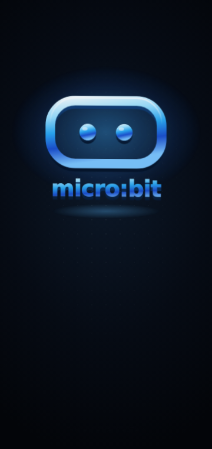
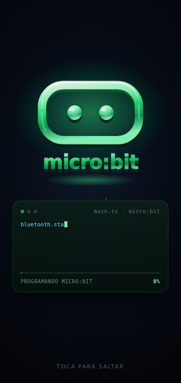
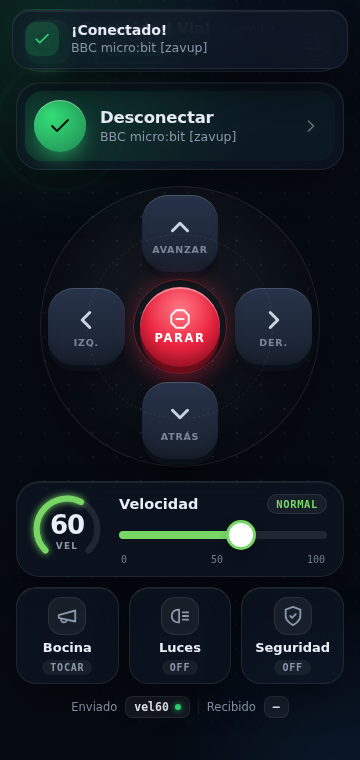
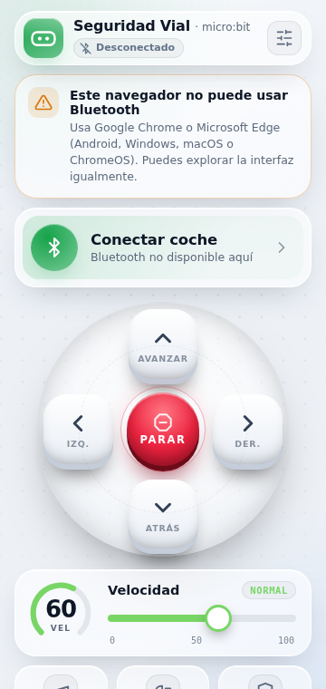
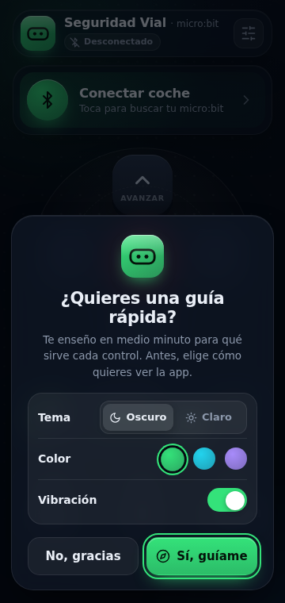
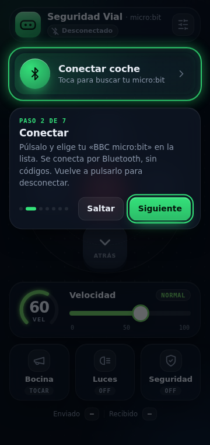

Seguridad Vial con micro:bit
Memoria del proyecto: diseño y construcción de un coche robot educativo, controlado por Bluetooth desde el móvil, para enseñar conceptos de seguridad vial y electrónica aplicada.
Introducción y justificación
La seguridad vial es uno de esos temas que todo el mundo da por sabido hasta que se para a pensarlo de verdad: frenar a tiempo, respetar la velocidad, señalizar las maniobras, reaccionar ante un obstáculo. Son automatismos que un conductor humano aprende con la práctica, pero que también se pueden explicar, programar y poner a prueba en un sistema mucho más simple: un coche robot.
Este proyecto nace de unir dos asignaturas que normalmente van por separado: la electrónica y programación por bloques (micro:bit, MakeCode, el robot Maqueen) y el desarrollo web moderno (una app que se conecta por Bluetooth directamente desde el navegador del móvil, sin instalar nada). El resultado es un sistema completo, de extremo a extremo, que se puede tocar, conducir y explicar en una presentación.
Además de ser un ejercicio técnico, el proyecto sirve como herramienta didáctica: el robot incorpora un sistema de frenado de emergencia por sensor de distancia, luces de aviso y bocina, exactamente los mismos conceptos — distancia de seguridad, señalización, reacción ante obstáculos — que se explican en la educación vial, pero aquí se pueden programar, fallar, depurar y volver a probar, que es como de verdad se interioriza un concepto técnico.
Por qué STEM
Combina electrónica, programación por bloques, programación web, física del movimiento y diseño de interfaces en un único proyecto con un resultado tangible: un coche que de verdad se mueve.
Por qué seguridad vial
Traduce normas de circulación (frenar a tiempo, avisar, respetar la distancia) en reglas de programación concretas y comprobables en el propio robot.
Qué se quiere conseguir
Objetivo general: diseñar y construir un sistema completo — hardware y software — que permita controlar de forma remota un vehículo robótico educativo mediante Bluetooth de baja energía, aplicando conceptos de comunicación inalámbrica, programación por bloques y desarrollo web, mientras se refuerzan nociones de seguridad vial.
- Programar el micro:bit
Que reciba órdenes de texto por Bluetooth y las traduzca en movimiento real del robot Maqueen.
- Desarrollar la app de control
Una web que se conecte por Bluetooth de baja energía (BLE) sin instalar nada, desde cualquier móvil Android compatible.
- Diseñar un protocolo fiable
Un conjunto de comandos de texto simple, fácil de depurar y de ampliar con nuevas funciones en el futuro.
- Incorporar seguridad activa
Frenado de emergencia por sensor de distancia, parada automática ante pérdida de conexión, y señalización con luces y bocina.
- Cuidar la experiencia de usuario
Una interfaz clara, atractiva y táctil, con información del estado de conexión siempre visible.
- Documentar el proceso
Dejar un registro — esta misma memoria — que permita a cualquier compañero entender, reproducir y ampliar el proyecto.
Las piezas que hacen falta entender
3.1 · BBC micro:bit v2
El micro:bit es una placa de desarrollo educativa del tamaño de una tarjeta de crédito, con un microcontrolador ARM Cortex-M4, pantalla de 25 LEDs, botones, acelerómetro, brújula, micrófono, altavoz y, lo que nos interesa aquí, radio Bluetooth. Se programa por bloques o por texto (JavaScript/Python) desde MakeCode, lo que la hace perfecta para un proyecto de bachillerato: es asequible, muy documentada, y se integra directamente con el robot Maqueen a través de su conector de borde.
3.2 · Bluetooth Low Energy y el servicio UART
Un dispositivo Bluetooth Low Energy (BLE) organiza lo que puede hacer en servicios, y cada servicio en varias características (characteristics) que se pueden leer, escribir o a las que uno se puede suscribir para recibir avisos. El micro:bit implementa el Nordic UART Service, que imita un cable serie clásico sobre Bluetooth: todo lo que la app "escribe" en una característica, el micro:bit lo recibe como si llegara por un cable, carácter a carácter.
Pulsa sobre el móvil, el micro:bit o el Maqueen para ver qué hace cada parte del sistema.
Arquitectura general del sistema de comunicación
Un detalle real que apareció durante el desarrollo, y que merece la pena contar: según el estándar genérico de Nordic, la característica 6e400002 debería ser para escribir y la 6e400003 para recibir. En el micro:bit real es justo al revés. La app no se fía del UUID fijo: pide las dos características y elige por sus propiedades (la que admite escritura es la buena), así funciona pase lo que pase. Es un buen ejemplo de por qué, en electrónica, hay que verificar el comportamiento real del hardware y no solo confiar en la documentación genérica.
3.3 · Robot Maqueen (DFRobot)
El Maqueen es un chasis robótico pensado para el micro:bit: dos motores independientes (uno por rueda), un sensor ultrasónico de distancia, dos LEDs auxiliares y sensores de seguimiento de línea. El micro:bit se conecta a él por el conector de borde y le habla por I2C, un protocolo de comunicación de corta distancia muy habitual entre microcontroladores y periféricos.
3.4 · Web Bluetooth API
Es la API que permite que una página web, con JavaScript normal, se conecte directamente a un dispositivo Bluetooth cercano — sin aplicaciones nativas, sin instalar nada. Por motivos de seguridad y privacidad, solo funciona en páginas servidas por HTTPS (o en localhost) y solo se puede iniciar la búsqueda de dispositivos tras una acción directa de la persona usuaria, como pulsar un botón. Es compatible con Chrome y Edge en Android, Windows, macOS y ChromeOS; Safari (iPhone/iPad) no la soporta.
Cómo viaja una orden desde el dedo hasta la rueda
Cuando se pulsa "Avanzar" en la app, ocurre esta secuencia, de principio a fin:
La app codifica el texto "avanzar\n" en UTF-8 y lo escribe en la característica Bluetooth del micro:bit que admite escritura.
Su programa está escuchando el servicio UART; en cuanto ve el \n, da por terminado el comando y lo compara con los que conoce.
Para "avanzar", ejecuta motorRun en ambas ruedas hacia delante, a la velocidad guardada.
Todo esto ocurre en milisegundos: el retardo percibido entre pulsar y que el coche se mueva es casi instantáneo.
Programación del micro:bit
El micro:bit se programa en MakeCode con dos extensiones añadidas: Bluetooth (built-in) y Maqueen (de DFRobot). La lógica se reparte en tres bloques de evento:
- · Al iniciar — arranca el servicio UART y deja el coche parado y las luces apagadas.
- · Al recibir datos UART — lee el texto hasta el salto de línea y decide qué hacer según el comando.
- · Por siempre — vigila el sensor ultrasónico y frena solo si el modo "seguridad" está activo.
La tabla de comandos que entiende el programa es exactamente la misma que envía la app:
| Comando | Cuándo se envía |
|---|---|
avanzar | Flecha ↑ pulsada |
atras | Flecha ↓ pulsada |
izquierda | Flecha ← pulsada |
derecha | Flecha → pulsada |
parar | Al soltar, pulsar PARAR, conectar o desconectar |
vel0 … vel100 | Al mover el deslizador de velocidad |
bocina | Botón Bocina |
luces | Botón Luces (alterna ON/OFF) |
seguridad | Botón Seguridad (alterna el frenado automático) |
main.ts — programa completo del micro:bit Copiar
let velocidad = 60
let movimiento = "parar"
let seguridadOn = false
let lucesOn = false
const DISTANCIA_MIN = 10 // cm — distancia de frenada
bluetooth.onUartDataReceived(serial.delimiters(Delimiters.NewLine), function () {
let cmd = bluetooth.uartReadUntil(serial.delimiters(Delimiters.NewLine)).trim()
if (cmd == "avanzar") { movimiento = "avanzar"; maqueen.motorRun(maqueen.Motors.All, maqueen.Dir.CW, velocidad * 255 / 100) }
else if (cmd == "parar") { movimiento = "parar"; maqueen.motorStop(maqueen.Motors.All) }
else if (cmd.substr(0, 3) == "vel") { velocidad = parseFloat(cmd.substr(3)) }
else if (cmd == "seguridad") { seguridadOn = !seguridadOn }
// ... atras, izquierda, derecha, bocina, luces (ver memoria completa en el repositorio)
})
basic.forever(function () {
if (seguridadOn && movimiento == "avanzar" && maqueen.Ultrasonic() < DISTANCIA_MIN) {
maqueen.motorStop(maqueen.Motors.All)
movimiento = "parar"
}
})
bluetooth.onBluetoothDisconnected(function () { maqueen.motorStop(maqueen.Motors.All) })
bluetooth.startUartService()⚠️ Ajuste imprescindible: en MakeCode, icono ⚙️ → Configuración del proyecto → activar "No se requiere emparejamiento", para que el móvil conecte sin pedir un código.
La app de control
La app (index.html) es un único archivo autocontenido — HTML, CSS y JavaScript, sin frameworks — pensado para abrirse con doble clic o publicarse en GitHub Pages. Se organiza en una clase MicrobitUART que gestiona toda la conexión Bluetooth, y una capa de interfaz con animaciones premium: glassmorphism, controles con profundidad 3D, y una intro animada de unos 5 segundos.
Prueba el protocolo tú mismo
Este panel es una simulación: no usa Bluetooth real, pero genera exactamente el mismo texto que la app de verdad manda al micro:bit. Pulsa los controles y observa el registro de comandos.
Cómo se hizo la animación de bienvenida
La intro (logo 3D → modo "programación" en verde → explosión de partículas) no usa vídeos ni imágenes: es SVG animado por código más un <canvas> para las partículas, todo coordinado por una única "línea de tiempo maestra" en requestAnimationFrame. Aquí tienes una versión reducida, en directo:
Técnicas de rendimiento usadas
Solo transform / opacity
Lo mueve la tarjeta gráfica (GPU), sin recalcular el diseño de toda la página en cada fotograma.
Una sola línea de tiempo
Un reloj t controla todas las fases a la vez; se puede saltar la intro sin descoordinar nada.
Pruebas realizadas
Antes de probar con el coche real, la app se validó con un micro:bit simulado (se sustituye navigator.bluetooth por una versión de prueba que registra todo lo que se escribe), para comprobar el protocolo sin depender del hardware.
Filtro de nombre correcto, UUIDs válidos, comandos exactos (avanzar\n, vel75\n…), sin escrituras concurrentes, coalescencia de comandos repetidos.
Al simular una desconexión brusca, la app reintenta sola y, si no lo consigue, muestra un aviso con el botón "Reconectar".
Si la app pasa a segundo plano mientras el coche avanza, se envía parar automáticamente.
Sin desbordamiento horizontal en móvil pequeño (360px), móvil estándar, horizontal y ordenador/proyector.
Con la CPU limitada ×4 (para simular un móvil de gama media), la intro mantiene una mediana de 16,7 ms por fotograma — el equivalente a 60 imágenes por segundo.
Con "reducir movimiento" activado en el sistema operativo, la intro se acorta automáticamente y se eliminan los efectos de paralaje.
Resultados
Capturas reales de la app funcionando — toca cualquiera para ampliarla.






Conclusiones y mejoras futuras
El proyecto demuestra que es posible construir, con herramientas accesibles para bachillerato, un sistema completo de control remoto que conecta electrónica física y desarrollo web moderno. Entre los aprendizajes más valiosos: la importancia de verificar el comportamiento real del hardware (el caso de las características BLE invertidas), de diseñar mecanismos de seguridad por defecto (parar ante cualquier fallo, nunca seguir a ciegas), y de que el rendimiento de una animación depende más de qué propiedades se animan que de cuántos efectos se añaden.
Posibles ampliaciones
Usar los sensores de línea del Maqueen para que el coche siga un circuito sin intervención humana.
Convertir index.html en una aplicación instalable en el móvil, con icono propio y funcionamiento sin conexión a internet.
Registrar velocidad, distancia recorrida y frenadas de emergencia para analizarlas después, como una "caja negra" educativa.
Controlar dos coches a la vez desde dos móviles distintos y cronometrar vueltas.
Pon a prueba lo aprendido
8 preguntas sobre los conceptos clave del proyecto. Tu resultado se guarda en este navegador.
Bibliografía y referencias
- 01MakeCode — Bluetooth Service (microbit.org)
Referencia oficial del servicio Bluetooth UART del micro:bit.
- 02DFRobot/pxt-maqueen (GitHub)
Código fuente de la extensión Maqueen para MakeCode.
- 03MDN — Web Bluetooth API
Documentación de la API usada por la app para conectar con el micro:bit.
- 04Bluetooth SIG — Especificaciones GATT
Define cómo funcionan servicios y características en BLE.
- 05micro:bit.org — Guía de usuario
Características técnicas de la placa BBC micro:bit v2.
📌 Si tu profesor/a pide datos estadísticos sobre seguridad vial (accidentalidad, edad de los conductores, etc.), añádelos aquí citando una fuente oficial como la DGT o la OMS — no se han incluido cifras concretas en esta memoria para no citar datos sin verificar.
Anexo: tabla completa de comandos
Para cuadrar la app con el programa del micro:bit en MakeCode. Enlace al repositorio y a la app: abrir index.html.
| Comando | Formato | Descripción |
|---|---|---|
avanzar | texto + \n | Mueve el coche hacia delante mientras se mantiene pulsado |
atras | texto + \n | Mueve el coche hacia atrás |
izquierda | texto + \n | Gira a la izquierda sobre su eje |
derecha | texto + \n | Gira a la derecha sobre su eje |
parar | texto + \n | Frena inmediatamente (botón de emergencia) |
vel<0-100> | p.ej. vel75 | Fija la velocidad del 0 al 100% |
bocina | texto + \n | Hace sonar el zumbador un instante |
luces | texto + \n | Alterna las luces/intermitentes ON/OFF |
seguridad | texto + \n | Alterna el frenado automático por sensor ON/OFF |